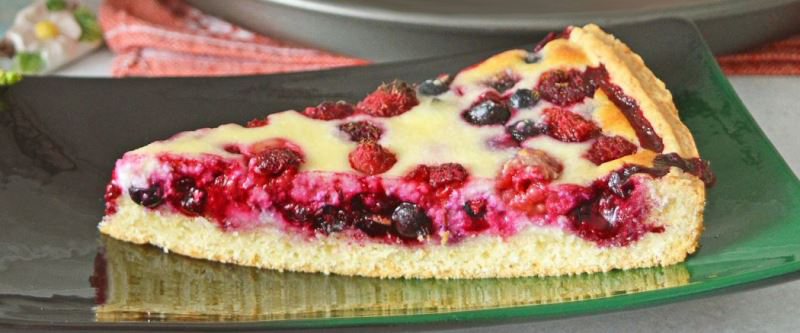

приготовление:
-
Разогреть духовку до 160 °C. Застелить форму для выпечки пергаментом и смазать сливочным маслом.
-
Для теста смешать 1 яйцо, 1 желток, 1 стакан сахара, ванилин и 150 г растопленного сливочного масла. Добавить 300 г муки и вымесить до однородности. Распределить тесто руками по дну формы и сформировать бортики.
-
Для начинки взбить 250 г сметаны с 2 яйцами, 75 г сахара и ванилином. Аккуратно вмешать 2 стакана земляники или черники.
-
Вылить начинку на основу и поправить бортики так, чтобы они выступали над начинкой на ≈ 5 мм. Выпекать 1 час. Перед подачей дать пирогу остыть.